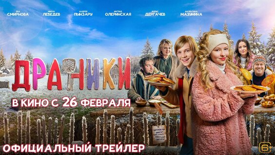

Весь интернет.
В своём кружке.
Ваши любимые люди, смешные видео, разговоры до ночи. Сделаем из пересланных ссылок общий вечер?
О маленьком закрытом клубеКомпания — одна.
 встречаемся
встречаемсяв интернете
Сначала —
короткий трейлер.
Настоящие видео из VK Видео и Rutube.
Выберите историю под настроение.

Автозапуск без звука. Включить звук можно в плеере.
Это примеры просмотра по ссылке. Комнаты с друзьями доступны отдельно по приглашению. Если плеер недоступен, откройте видео на площадке.
Не просто
«глянь ссылку».
А «давай вместе».
Сохраняем привычный способ находить видео: YouTube, Telegram, соцсети. И добавляем то, чего не хватает в пересылке — общий просмотр и живой разговор.
История для вашего кружка
Пример видео · ваша компанияИнтерактивный пример интерфейса. Видео не воспроизводится.
Берём в кружок.
Пока по приглашению.
Сейчас собираем небольшой круг участников, чтобы проверить комнаты, видеоссылки и синхронизацию. Новых участников приглашает команда.
У меня есть приглашение
Откройте персональную ссылку, которую прислала команда Кружок. На этом лендинге нет формы входа или регистрации.
Закрытое тестирование · только по приглашению
Что обсуждают
в кружке.
Что можно будет смотреть?
В закрытом тесте проверяем просмотр по ссылкам из YouTube, Telegram, VK Видео и других видеоплатформ. Доступность зависит от источника и доступа к оригиналу. Собственного каталога фильмов у Кружок нет.
Почему нельзя зарегистрироваться?
Сервис проходит закрытое тестирование. Новых участников приглашает команда проекта. Публичной регистрации и активации кодов на этой странице нет.
Когда откроется сервис?
Дата общего запуска пока не объявлена. Сначала проверяем основной сценарий и собираем обратную связь участников.